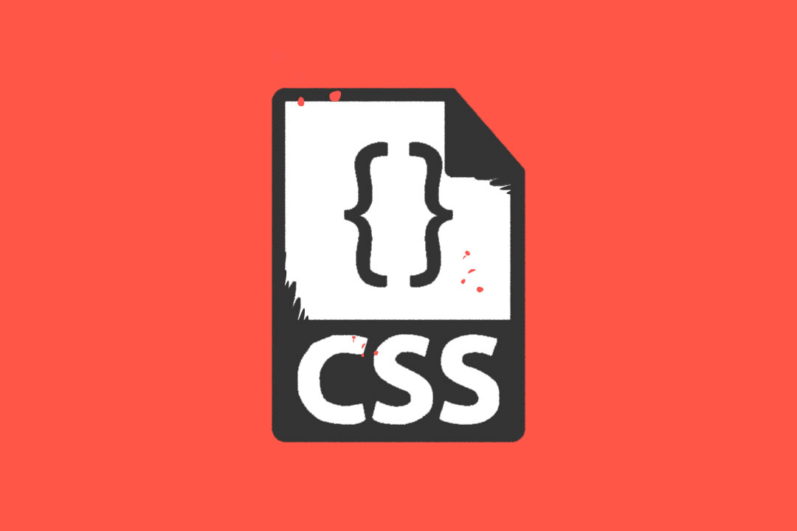

Fundamentos de CSS
según el libro electronico --los fundamentos de las css-- Con las CSS los diseñadores crean hojas de estilo que definen cómo se mostrarán diversos elementos, como encabezados, enlaces, texto, imágenes, etc. Estas hojas de estilo se pueden entonces aplicar a cualquier página o a todas las páginas en un sitio web particular, lo que hace la codificación mucho más sencilla
